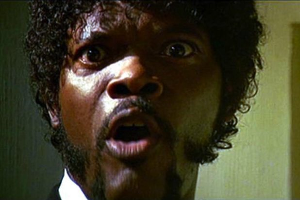

Samuel L. Jackson
I don't remember asking you a Goddamned thing

Samuel Jackson as Jules Winnfield in Pulp Fiction
Summary of Mr. Jackson's accomplishments:
2010 Independent Spirit Awards Best Supporting Male - Nominated
1998 Berlin International Film Festival Silver Bear for Best Actor -
Won
1997 Hollywood Foreign Press Association Best Performance by an Actor in a Motion Picture - Musical or Comedy - Nominated
1997 Independent Spirit Awards Best Supporting Actor - Nominated
1994 Independent Spirit Awards Best Actor -
Won
1994 National Society of Film Critics Best Actor - Runner-up -
Won
1994 Hollywood Foreign Press Association Best Performance by an Actor in a Supporting Role in a Motion Picture - Nominated
1994 Academy of Motion Picture Arts and Sciences Best Supporting Actor - Nominated
1994 Screen Actors Guild Best Supporting Actor - Nominated
1991 New York Film Critics Circle Best Supporting Actor -
Won
1991 Cannes Film Festival Jury Prize For Best Supporting Actor -
Won
Wikipedia